История центра
Более ста лет медицинской истории — с 1915 года
От медпункта завода — до центра высоких технологий
История нашей клиники началась более ста лет назад — в 1915 году, с небольшого приёмного покоя при оптическом заводе. За это время учреждение прошло путь от заводского медицинского пункта до многопрофильной Клинической больницы Святителя Луки, на базе которой в 2009 году был создан Городской центр эндоскопической урологии и новых технологий.
Ключевые даты
Главные вехи более чем столетней истории
При заводе Российского акционерного общества оптического и механического производства организованы приёмный покой, аптека и перевязочная. Штат приёмного покоя — врач, два фельдшера, помощница провизора и прислуга, а для коечного лечения завод арендовал кровать в общине сестёр милосердия «Святой Георгий».
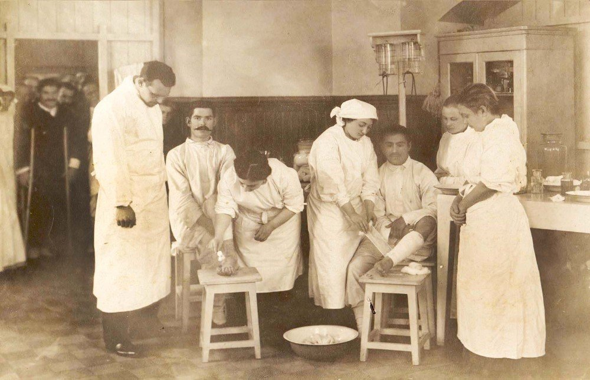
Государственный оптический завод № 95 открывает медицинский пункт, разместившийся в трёх кабинетах: здесь трудились врач и медицинская сестра и оказывалась экстренная помощь. Пропускная способность — 15 человек в день.
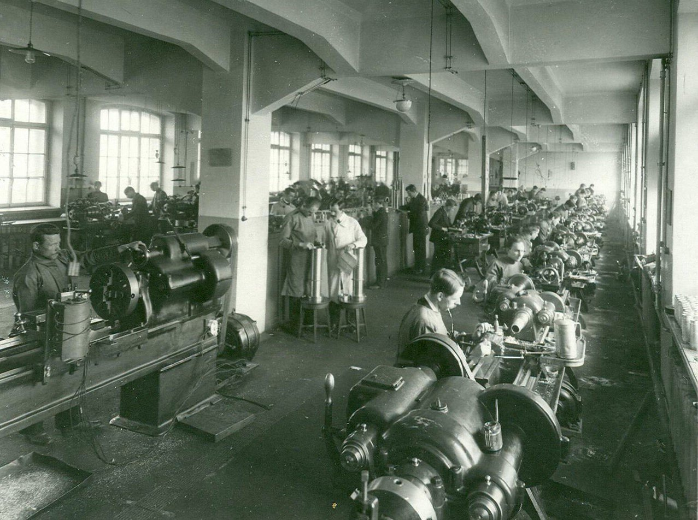
Медицинский пункт ГОМЗ им. ОГПУ переходит на круглосуточное обслуживание больных и пострадавших. В цехах завода проводится санитарно-просветительная работа, осуществляются прививки и осмотры трудящихся.
Медицинский пункт становится травматологическим пунктом завода — в штат дополнительно входят хирург, дерматолог, невропатолог и окулист.
На базе травматологического пункта создана амбулатория, переведённая в отдельное здание. В 1936 году её штат расширен до двадцати врачей и сорока двух человек среднего медперсонала, открывается стоматологический кабинет, а в 1937 году — рентгенологический.
Создана медико-санитарная часть «Дворец здоровья» — с этой даты больница ведёт отсчёт своего существования. В новом здании разместились поликлиника и стационар на 120 коек: 38 хирургических и 82 терапевтические.
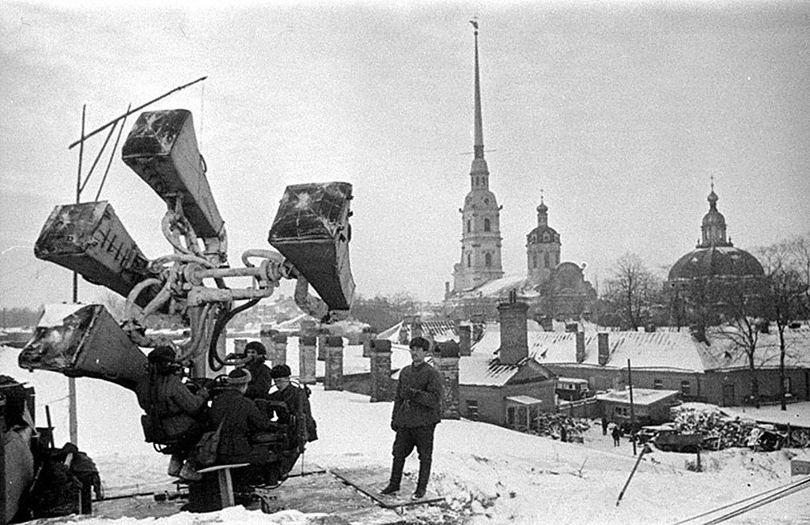
МСЧ ЛОМО расширяется до 150 коек, а ещё через десять лет, в 1972 году, — до 210 коек. Построено пятиэтажное здание поликлиники, налажено оказание стационарной и амбулаторной помощи работникам ЛОМО.
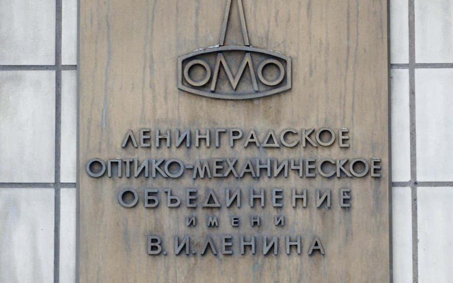
МСЧ ЛОМО переходит в подчинение Комитета по здравоохранению Администрации Санкт-Петербурга. Медицинская помощь начинает оказываться не только работникам ЛОМО, но и всем жителям города.
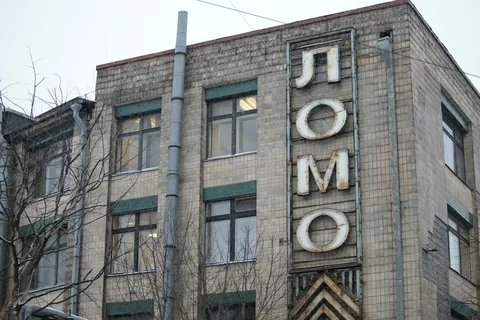
24 июня на базе отделения урологии Клинической больницы Святителя Луки организован Городской центр эндоскопической урологии и новых технологий — высококвалифицированная помощь пациентам с урологической патологией в плановом и экстренном режимах.
Открыто многопрофильное онкологическое отделение на 30 коек (онкогинекология, онкоурология, онкохирургия). Сегодня Клиническая больница Святителя Луки — многопрофильный стационар на 507 коек.
Начата масштабная реконструкция больницы: обновление операционных, усиление корпуса и подготовка к надстройке пятого этажа под новый операционный блок и отделение реанимации.
На средства городского бюджета выполнены поставка и монтаж модульного операционного блока — основы будущего хирургического комплекса больницы.
Завершён капитальный ремонт четвёртого этажа: открыты отделение урологии №2 и операционный блок малоинвазивной хирургии.
Впервые в России при участии губернатора Санкт-Петербурга Александра Дмитриевича Беглова открыт новейший операционный блок, оснащённый интегрированными операционными.
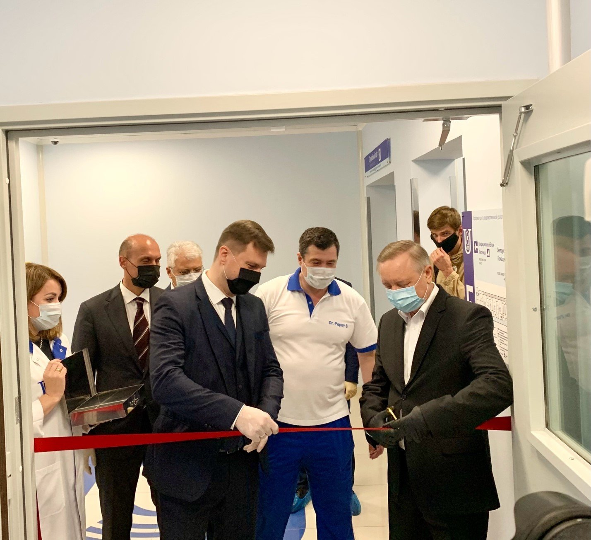
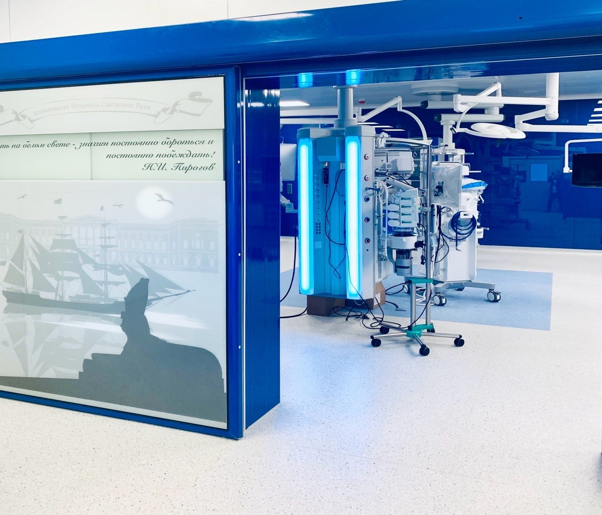
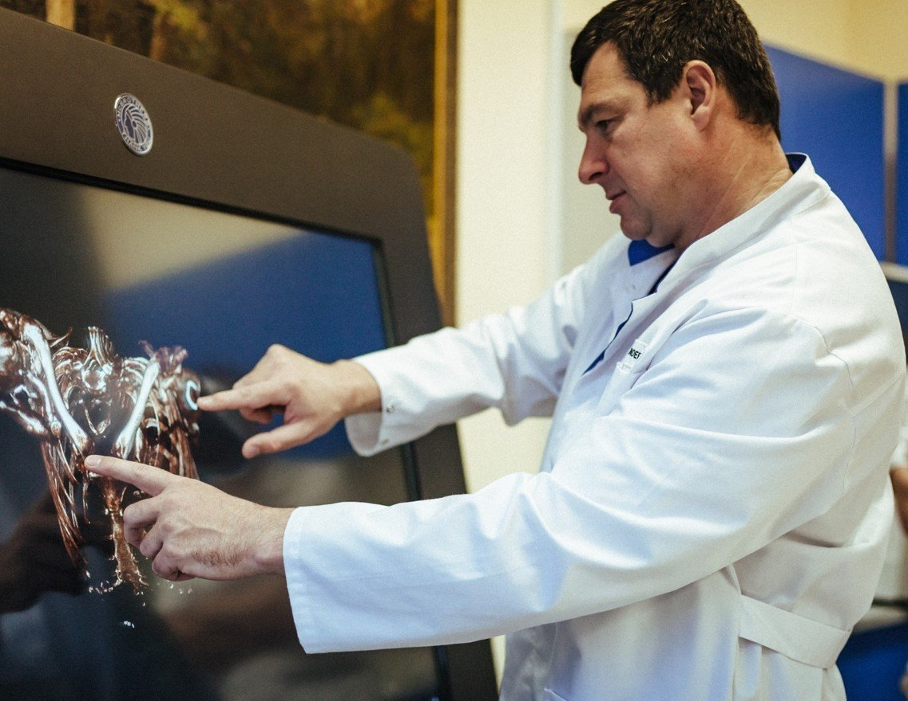
Открыт Центр роботической хирургии при участии главного уролога Российской Федерации, академика Дмитрия Юрьевича Пушкаря. Центр оснащён робот-ассистированной установкой «да Винчи Xi».
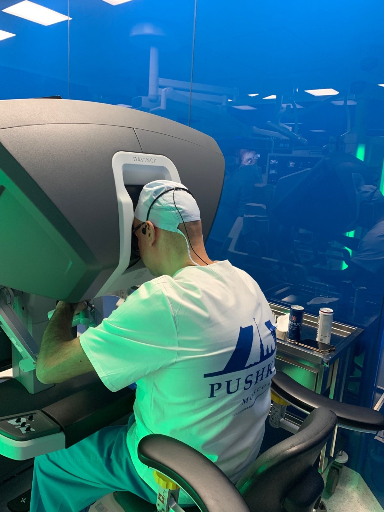
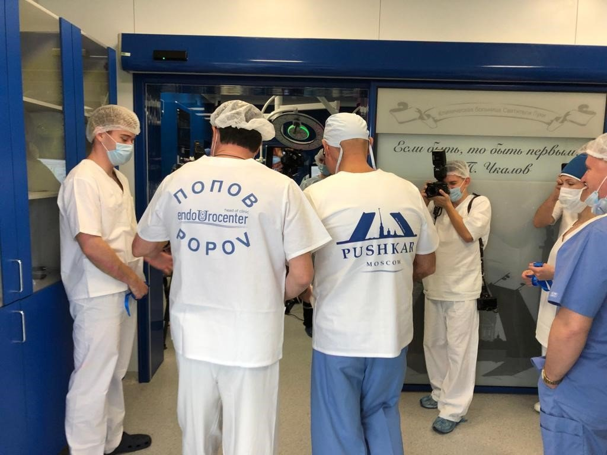
Открыто направление трансплантации почки. Успешно выполнена первая родственная пересадка почки.


Открыто онкоурологическое отделение. Оказывается комплексная помощь пациентам с опухолевыми поражениями мочеполовой системы.

Открыто направление рентгенохирургических методов диагностики и лечения — отделение эндоваскулярной хирургии, оснащённое современным ангиографическим стационарным комплексом экспертного класса «Дискавери IGS 7 OR» («Дженерал Электрик») в составе гибридной операционной.

Начал свою работу кабинет магнитно-резонансной томографии, оснащённый новейшим магнитно-резонансным томографом «Магнетом Вида» с напряжённостью магнитного поля 3 Тл.
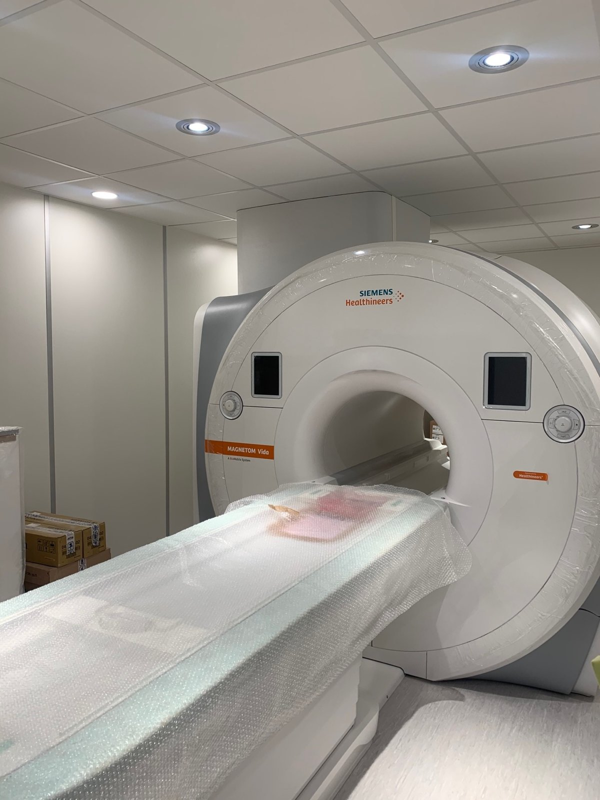
Открыт Городской нефрологический центр, где оказывают комплексную нефрологическую помощь. Функционирует кабинет диализа.

Центр отмечает 15 лет со дня создания. К этому времени выполнено более 10 000 высокотехнологичных операций.
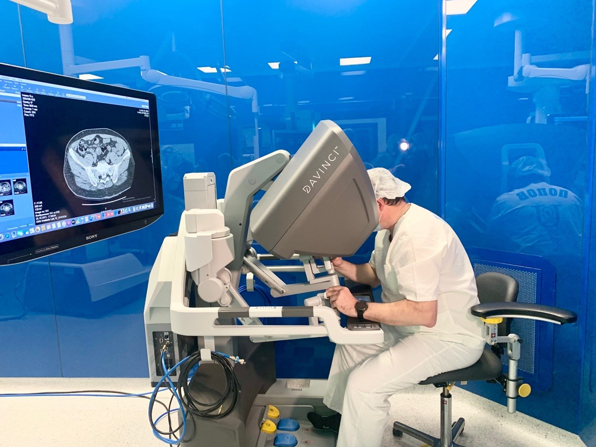
Проведена междисциплинарная научно-практическая конференция «Эндоуроцентр митинг — 2025», команда центра представила доклады на XX Юбилейном Международном конгрессе РООУ, выполнена первая в России органосохраняющая операция при доброкачественной миоперицитоме почки.
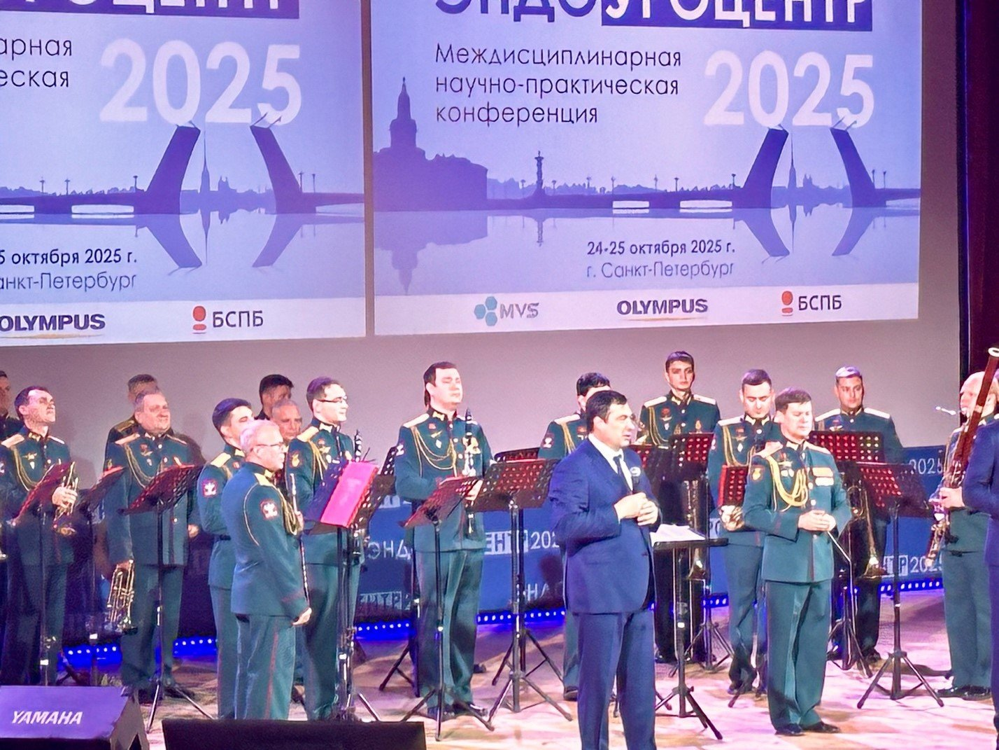
В центре выполнена робот-ассистированная операция с применением робота китайского производства — освоение новых хирургических платформ продолжается.

Центр сегодня
Городской центр эндоскопической урологии и новых технологий — современное высокотехнологичное учреждение
Мультидисциплинарный подход
В Центре представлены все ключевые направления современной медицины:
- эндоскопическая, лапароскопическая и робот-ассистированная хирургия;
- трансплантация почки;
- клинико-диагностическая лаборатория;
- КТ, МРТ и УЗИ диагностика;
- эндоваскулярная хирургия.
Операционные блоки
Центр оснащен 4 ультрасовременными интегрированными операционными, которые носят имя выдающихся исторических личностей: операционная им. Петра Первого, операционная им. А.В. Суворова, им. Н.П. Пирогова и В.П. Чкалова.
- новейшее анестезиологическое оборудование;
- лапароскопическое высокой чёткости и эндоскопическое оборудование;
- ультразвуковой диссектор;
- электрохирургический блок с аргоно-плазменной коагуляцией и технологией «ЛигаШур»;
- рентгенологическое оборудование;
- операционный ультразвуковой аппарат.
Клиническая база
Центр является клинической базой ведущих высших учебных и научных заведений Санкт-Петербурга:
- кафедры урологии, акушерства и гинекологии, патологической анатомии СЗГМУ им. И.И. Мечникова;
- кафедра пропедевтики внутренних болезней стоматологического факультета СПбГУ им. академика И.П. Павлова.
Наши специалисты уделяют самое пристальное внимание научной деятельности и входят в число профессорско-преподавательского состава ведущих высших учебных и научных учреждений Санкт-Петербурга.